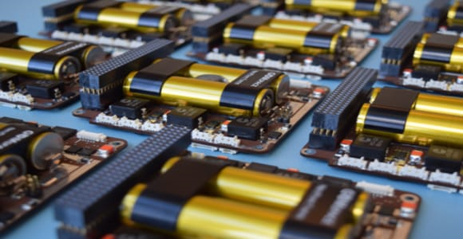
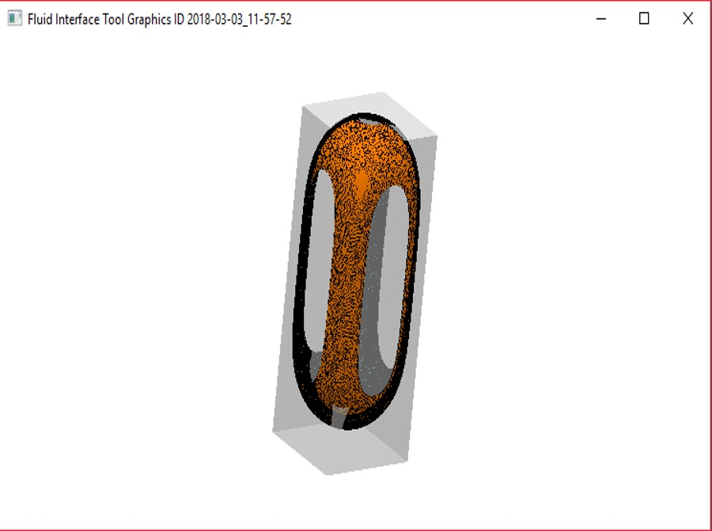
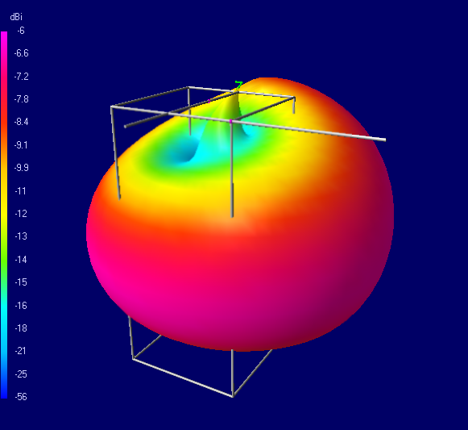
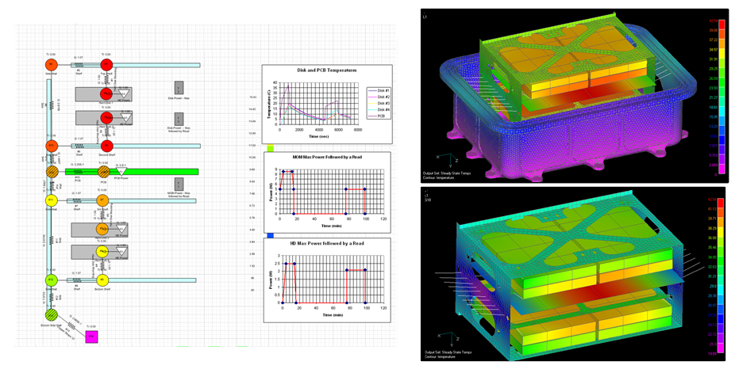

In order to survive the extremities the low earth orbit offers, our spacecraft is being developed under various subsystems.
Attitude Determination & Control System
assets/img/universe/adcs.png
Attitude Determination & Control Systems
About
Attitude Determination and Control system or simply ADCS stabilizes the satellite, orients
it in desired directions and senses the orientation relative to the reference or inertial points.
It is required to determine the position of the satellite in
space with respect to an inertial reference frame, to determine the attitude of the body frame
of the satellite with respect to orbit frame and to
bring the satellite into earth pointing orientation after ejection and to maintain this attitude within given bounds
throughout the period of operation.
RVSAT ADCS consists of a 3-axis magnetorquer control system, one sun-sensor on each face of the satellite(6 in total), an Inertial Measurement Unit (IMU), a GPS and related algorithms.
Electronics & Control Logic
assets/img/universe/ecl.png
Electronics & Control Logic
About
The Electronics & Control Logic, or ECL includes the necessary memory to store the information
received from various subystems and from the RVSAT Ground Station. It processes the incoming data
from the on-board experiment, as well as controls the power supply unit and store the
data received from the ground statios once the communication link has been
established. ECL must also carry out those tasks connected with its
own operation, such as memory management. It is going to handle an operating sequence for the various functions
of the satellite in orbit. This sequence orders tasks on the basis of orbital
time/position and also orders the execution of select tasks during the response to certain contingencies. The design of the ECL is based on achieving
this operating sequence with the maximum efficiency and minimum risk.

Electrical Power Subsystem
assets/img/universe/eps.png
Electrical Power Subsystem
About
For the normal functioning of the nanosatellite, electric power is an important ingredient. Every subsystem of the nanosatellite requires electric power to perform its function properly. The Electrical Power System (EPS) generates and provides the required power. The EPS can be mainly categorized into three parts, namely:-Power Generation, Storage and Distribution.

Payload
assets/img/universe/payload.png
Payload
About
Payload is the heart of the satellite that serves the purpose of the space mission. Technically, payload is the combination of hardware and the software that interacts with the subjects to accomplish the mission objectives. The payload here concentrates on how the bacterial growth and hence
the modification in metabolism happens when it is subjected to space conditions. This test derives results about whether a particular strain of bacteria behaves ideally i.e. as
required /normally or is there a change in the behaviour and if that change
is adverse or not. The analysis of microbial growth on microgravity serves as a stepping stone to get in-home results for the upcoming manned missions.
Strucutre & Material Design
assets/img/universe/smd.png
Structure & Material Design
About
The subsystem of Structure & Material Design deals with housing of the components which are responsible for the proper functioning of the nanosatellite
which will be built by Team Antariksh. The components will be
both internal and external components from various subsystems RVSAT-1.
Other equally important function of the structure of the nano satellite
is providing a proper stability for all the components which are exposed
to harsh environmental conditions in space as well as the conditions in the
launch vehicle. The structure has to withstand the environmental variations
as long as the flight duration exists.
The type of environment in the space during the mission operation frequent temperatures. This causes a continuous cycle of hot and cold temperature inducing fatigue of the structure due to thermal stresses.

Telemetry, Tracking & Command
assets/img/universe/ttc.png
Telemetry, Tracking & Command
About
Telemetry, Tracking and Command is a subsystem which provides a link between the satellite and the ground station. Telemetry involves wireless transmission of housekeeping data from the satellite which includes data from all
the subsystems.
Tracking is the process of overseeing the position and attitude of the satellite with respect to ground station to ensure the satellite is in its proposed
orbit. This is done so that data can be transmitted optimally in the form of
commands whenever the satellite is in the ground station's field of view.
Commanding is done to instruct the satellite regarding the operation to
be done after losing the line of sight and to get information about the health
status of satellite and its subsystem. It also helps the satellite to recover
from the technical faults and soft errors found in subsystems if any.
The main purpose of Telemetry, tracking and command in RVSAT-1 is to
retrieve instrument sensors data and ensure effective transmission between
the nanosatellite and the ground station. At the ground station we mainly
relay commands and data from the nanosatellite.

Thermal Systems
assets/img/universe/thermal.png
Thermal Systems
About
The responsibility of the Thermal Systems (TS) is to keep all the RVSAT-1
component systems(especially the payload and batteries) within acceptable temperature ranges during all mission phases as this is essential to guarantee
the optimum performance and success of the mission because if a compo-
nent is subjected to temperatures which are too high or too low, it could be
damaged or its performance could be severely affected .There is a defined
temperature range for all spacecraft components that must be met for optimal function. It can be achieved in two ways-
a) Active thermal control defines any method of thermal management
which requires energy input to function like micro-heaters, peltiers, louvers
etc.
b) Passive thermal control defines any method of thermal management which
does not require an energy input to function like multilayer insulation, optical coatings, emissivity tapes etc.

assets/img/universe/adcs.png